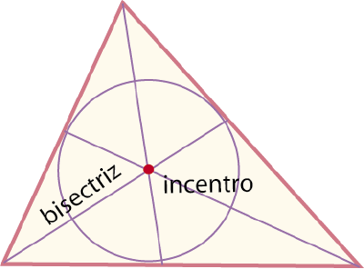
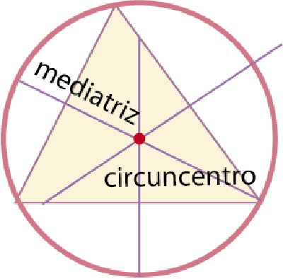
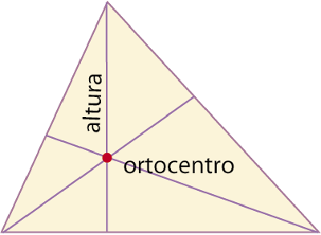
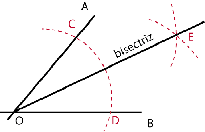
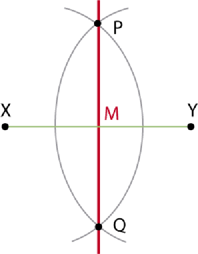
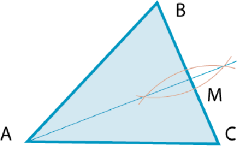
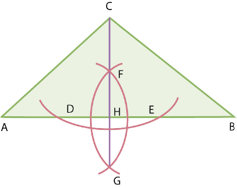
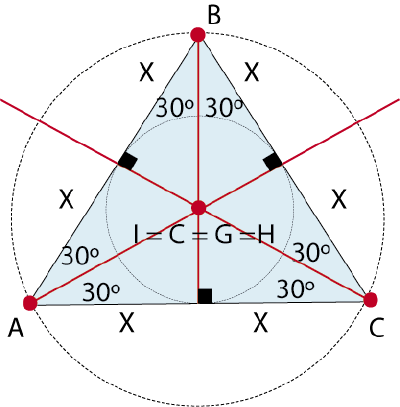
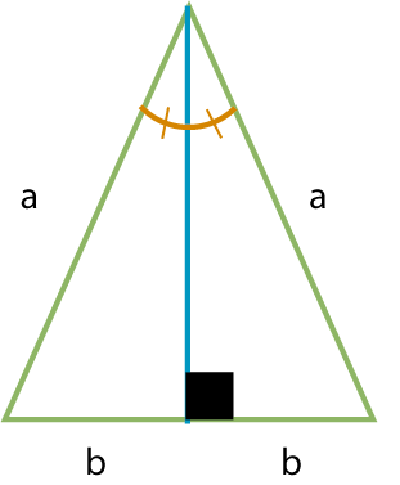

Comprendo para saber
Alumno:
Comprendo para saber
Alumno:
Líneas notables de un triángulo
Bisectriz es el segmento que divide al ángulo en dos ángulos iguales.
Mediatriz es la recta perpendicular trazada en el punto medio de un lado del triángulo.
Mediana es el segmento trazado desde un vértice del triángulo al punto medio del lado opuesto.
Altura es el segmento perpendicular trazado desde un lado del triángulo o su prolongación al vértice opuesto.
De la misma forma que las medianas se intersecan en un punto llamado baricentro, tenemos otros puntos notables de los triángulos que son resultado de la intersección de las otras líneas notables conocidas.
|

|

|

|
Incentro (I) es el punto resultante de la intersección de las bisectrices de los ángulos internos del triángulo. Es el centro del círculo inscrito del triángulo.
Circuncentro (C) es el punto resultante de la intersección de las mediatrices del triángulo. Es el centro del círculo circunscrito del triángulo.
Baricentro (G) es el punto resultante de la intersección de las medianas del triángulo. Es el centro de gravedad del triángulo.
Ortocentro (H) es el punto resultante de la intersección de las alturas del triángulo.
Construcción de líneas notables.
|

|
Sea el ángulo ∡AOB . ● Haz centro en O y traza un arco encontrando los puntos C y D. ● Desde el punto C, traza un arco cualquiera y con la misma medida traza otro arco desde el punto D, encontrando el punto E. ● Une los puntos O y 3 para determinar la bisectriz OE . |
|

|
Sea el segmento XY . ● Traza un arco con centro en X, con la misma medida traza otro arco con centro en Y. ● La intersección de estos arcos determina los puntos P y Q. ● Traza una recta que pase por los puntos P y Q, determinando de esta forma la mediatriz que genera el punto M. Donde MX = MY . |
|

|
Sea el triángulo ΔABC . ● Con el proceso anterior, encuentra el punto medio M del segmento BC . ● Traza el segmento AM , mediana del triángulo. |
|

|
Sea el triángulo ΔABC . ● Haz centro en C y traza un arco que corte en los puntos D y E. ● Haz centro en D y traza un arco y, con la misma medida, traza otro arco con centro en E. Los arcos se cruzan en los puntos F y G. ● Traza una recta que pase por C, F y G; encontrando el segmento CH , altura del triángulo. |
Los triángulos equilátero e isósceles tienen características especiales.
|

En un triángulo equilátero, cada línea es bisectriz, mediatriz, mediana y altura al mismo tiempo. Todas dividen a cada ángulo interno en ángulos iguales de 30° y a todos los lados en partes de igual longitud. |

En un triángulo isósceles, la altura del lado desigual es a su vez bisectriz, mediatriz y mediana. |